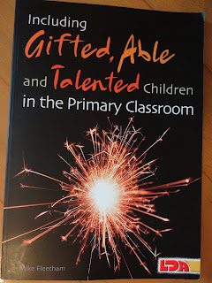
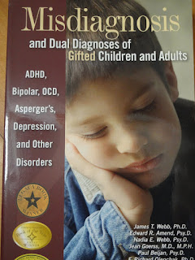
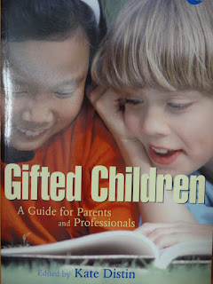

Giftedness in the classroom
How teachers can understand, and make room for, gifted and twice exceptional learners.
Not sure what giftedness is?
Want to understand your gifted students better?
Do gifted students really need extra attention?
Looking for ways of challenging your students thinking? Twice Exceptional - What does it mean?
Many people are unaware that gifted students can have learning difficulties.
They still have the narrow view that gifted students are 'straight A' students who breeze through school. It is probably one of the reasons that many teachers are reluctant to give any extra attention to gifted students, after all school is so easy for them! There is also resentment from other parents as they feel the gifted student has an unfair advantage over their child.
It is not uncommon for gifted students to be dyslexic or autistic or have ADHD or a whole range of learning difficulties. The difficulty is that giftedness can mask the learning difficulties as bright children can often find ways to compensate for their difficulties. On the other hand sometimes the learning difficulties masks the giftedness as teachers and adults focus on the behaviours and deficits rather than he child's abilities.
To add to the confusion gifted children also have overexcitabilites which can be misinterpreted as a learning difficulty like ADHD. They can be perfectionists, be rigid in their thinking and have difficulty socialising within their own age group which can be mistaken for autism. Their asychronous development can also mean that their motor skills and writing skills do not match their intellectual ability and can seem like a dyslexic type difficulty.
The result of these uneven profiles is that many gifted students are never recognised as 'gifted' within the school context. Their parents will see how rapidly they learn new things at home, their extreme curiosity and hunger understand the word around them, their advanced vocabulary and heightened sensitivity and awareness.
But at school, the teachers are unimpressed - they complain about the child being distracted, not listening to instructions, rushing to complete tasks, not completing written tasks carefully. They are frustrated that the child seems to want to follow their own agenda rather than dutifully completing the task as the teacher instructed.
And so the journey of disappointments, frustrations and misunderstanding begins for the child, the parents and the teacher.
As a parent and a teacher I can see both sides of the story. I understand why teachers behave in the way they do, as they rely on children's responses to a narrow range of activities in the classroom. But I also know the frustration when teachers do not see your child as you see them and they do not value your insights from your experiences at home.
The best way to identify twice exceptional children is for there to be an open and honest dialogue between teachers and parents.
The missing part of the puzzle is very often information that only the parent will have. There needs to be an acceptance that if a parent says their child is gifted the chances are that they are gifted. I don't even like the word 'gifted', I don't use it to boast, I use it because it the most helpful way of understanding my child. I find that very often my motives are questioned when I draw a teacher's attention to my child's abilities. Like all parents the well being of my child is my main concern, its not about 'status' or having unrealistic expectations. In fact I spend most of my time keeping quiet about my child's abilities with both friends and family.
Parents often see a different side of their child which may not be obvious in school. Teachers should not forget that parents have been observing their child from the day they were born and are quick to notice when their child does not behave or react to things in the way other children do. Often parents will spend many years puzzling and piecing together observations and researching possible causes for their child's difference. Parents know things about their child that teachers would never know from the school context. And just as many adults have a work persona and a home persona, children can present very differently at home and at school. Teachers need to value a parent's insights more and think about how it relates to the child they see in school.
In my experience, teacher's can often misinterpret a child's behaviour or shortcomings and the reason for these difficulties. They often blame parents when actually those things are very intrinsic to the child. And no amount of correction or persuasion will change it. My child is a perfectionist and no matter how many times I tell him it is ok to make a mistake, he still cries or gets angry when he does.
From a teacher's point of view, many have not had training about how giftedness may present itself in the classroom or the full range of gifted children they may come across. They are trained to value and judge a child's ability by how successfully they complete routine classroom tasks. There continues to be a big emphasis on what a child can record in writing. This can lead some gifted children to be grouped with 'lower' ability children because they are easily distracted or their writing is weak. Of course gifted students do need to learn to focus and improve their writing skills if this is an issue. But if we put all the focus on child's weaknesses and do not acknowledge or give time for them to be challenged or excel in their area of strength, this leads to frustration and demotivation. Which in turn can lead to behaviours which further distracts the teacher from the giftedness and a downward spiral begins.
Well informed teachers and parents are the key to the success of gifted students and particularly those who are twice exceptional.
Over the next few weeks I will be discussing the full range of twice exceptional students and the dangers of misdiagnosis.
Recommended book

A practical and easy to read book which draws together research on gifted and talented children. There is information on identifying gifted and talented learners, thoughts about how to develop school policy and activities to develop thinking skills.
The author Mike Fleetham also has an excellent website full of tips and downloadable resources. Check out www.thinkingclassroom.co.uk
Mike Fleetham is an education consultant who works with teachers and children to make learning more effective and enjoyable. He provides a range of staff training focusing on developing thinking skills in the classroom.
Here are two of the most informative books to get you started


This is one the clearest articles I have found which explains the main traits and challenges for gifted children
10 Facts You May Not Know About Gifted Children Celi Trépanier is the author of Educating Your Gifted Child: How One Public School Teacher Embraced Homeschooling. But you are gifted, you should be at the top of your class! I’ve been writing about gifted children for a few years now, and the more I write, and the more I connect with parents of gifted children, the more I realize just how misunderstood giftedness is, even among professionals who should have sufficient knowledge of giftedness in children. We need to shed light on what giftedness really is, and try to dispel the myths and misconceptions many believe about gifted children. Sam is in my class this year. He’s gifted, so thankfully I won’t need to worry much about him because I do have a few students who will really need my help! The following is a list of facts, traits and issues many would not recognize as a part of giftedness in children. Why such a list? It’s time to banish the many widely-held inaccurate perceptions of the gifted child. The pervasive but misguided idea of the gifted child—the child who excels in school, is well-behaved, is a natural leader and is emotionally mature—is the elephant in the room and that elephant needs to leave. We need the facts to prevail so that gifted children can have, as all children should, the education and support they need to grow up to be happy and thriving adults. I’m tired of hearing about her gifted child. What can be so hard about raising a smart kid? They always do well in school.
1. It is widely acknowledged that giftedness is an inherent attribute.
Although a few believe giftedness can be achieved through nurturing, the overwhelming consensus is that giftedness is present at birth, an inherited trait. Chances are very high that one or both parents of a gifted child, as well as siblings, are also gifted. Approximately 2% of the population is said to be gifted regardless of race, culture or socioeconomic status. It is a neurodiversity which does not discriminate.
2. Gifted children do not always excel in school.
Being gifted is no guarantee of success in school or later in life. For many various reasons, a gifted child will not always score well on tests, ace every assignment or turn in his homework. Despite having above-average cognitive abilities, if a gifted child’s educational needs are not met appropriately, he may not show exceptional achievement in school. Many gifted children underachieve in school and often drop out.
3. Gifted children can and do have learning disabilities.
As with any child, a gifted child may have learning disabilities which can negatively influence their achievement in school. Unfortunately, gifted children with learning disabilities, also referred to as twice-exceptional, often go unidentified because their advanced cognitive abilities often mask their learning disabilities. It is common that neither the giftedness nor the learning disability are recognized or addressed in school.
4. Gifted children often develop asynchronously.
Asynchronous development is an imbalance or uneven growth of developing traits, skills and abilities—a gifted child’s intellectual abilities can be years ahead of their emotional maturity and social skills. A 12 year old child who understands high school algebra and science, but is unable to sleep at night alone without a nightlight, a fan and all of his stuffed animals is an example of asynchronous development in a gifted child.
5. Gifted children can have overexcitabilities (OE’s).
These are the emotional intensities and sensitivities set off by various forms of physical and psychological stimuli. A constant buzzing sound which causes extreme irritability and the inability to move on until the sound is located and stopped; the strong emotional reaction of shaking and vomiting from seeing a neighbor’s dog lying in the road after being hit by a car; and the gritty texture in`her mom’s turkey gravy which causes a gifted teen to totally refrain from eating the family’s holiday dinner are all examples of OE’s.
6. Gifted children often have difficulty finding like-minded friends.
Gifted children, with their intellectual, emotional and developmental differences, can have a difficult time finding friends or same-age peers who share and understand their intellectual interests and quirky traits. Parents of gifted children find this common situation the most painful to watch their gifted children experience.
7. Gifted children often feel like they don’t fit in.
They realize early on that they may be out of step or out of sync with children their own age. Feelings of isolation and not belonging can eventually lead to emotional struggles, depression, dropping out of school and even suicide.
8. Gifted children are gifted in and out of school.
It is not only an educational designation or label administered by schools to identify high-achieving children. The emotional intensities, asynchrony and social struggles leave school with the gifted child and follow him home. Being gifted is who they are, not how well they do in school.
9. Being gifted is not a net-positive situation.
Looking back at the above list, there are many facts about giftedness which demonstrate that being gifted is not an all-good-all-the-time situation. Being smarter or able to grasp and master concepts and skills above grade level is not a guarantee that any child has it made and will be successful in life.
10. Raising a gifted child is not easy.
Given the educational considerations, overexcitabilities, social struggles and asynchrony, life with a gifted child can easily come with its share of bumps in the road. Additionally, the reality that so many only see the stereotypical gifted child—the child who has it made—means parents find little support or empathy among other parents or adults when they need it most. I wish my child could be gifted and get to attend special classes. Personally, I think all children are gifted and should be able to be in the gifted program. Giftedness has its upsides and it downsides. It has many attributes which are misunderstood by many and are often not associated with giftedness in children. Because of this, the education of our gifted learners has been a global concern for some time. Every child should be able to receive an education which best meets his or her needs and offers the best chance to reach their full potential. Gifted children should, too.